-
チュートリアル（基礎）
- RPA、RDAとは
- WinAutomationとは
- セットアップ手順
- コンソールの操作方法
- Task1 コンソールを操作してみましょう
- ProcessDesignerの操作方法
- 基本アクションについて
- Task2 アクションを設定してみましょう
- トリガー設定
- Task3 トリガーを作成してみましょう
- スケジューラー設定
- Task4 スケジューラーを作成してみましょう
- EXCEL操作
- Task5 EXCELを操作してみましょう
- マクロレコーダー
- Task6 アプリケーションを操作してみましょう
- Webレコーダー
- Task7 Webサイトを操作してみましょう
- 画像認識
- Task8 画像認識で処理を作成してみましょう
- 例外処理
- アクション一覧
- サンプル
- FAQ
- トラブルシューティング
基本アクションについて
Process Designerの操作で学んだように、WinAutomationは様々なアクションを組み合わせることで、開発を行っていきます。
WinAutomationは200を超えるアクションが組み込まれています。
ここではもっとも基本的なアクションを学びましょう。
変数操作
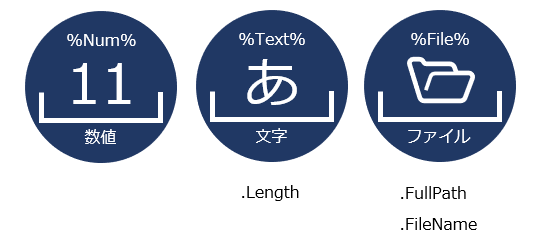
- WinAutomationは内部データを変数と呼ばれる箱で管理しています。
- 変数は式の一部として記述を行い、「%Variable%」のように使用します。
- 変数には数値、文字、日付など様々なタイプ（型）があります。
- 文字であれば.Length（文字長）、Listであれば.Count（データの個数）など、変数の型によって必要な補足情報（プロパティ）にアクセスすることが可能です。
変数名を初期値のまま使用することも可能ですが、これでは何の値が設定されているのか分かりません。
「%FileName%」であれば、ファイル名が格納されていることが分かります。
「%InputExcelFileName%」であれば、入力に必要なEXCELファイル名が設定されていることが分かります。
あまり長すぎるのも好ましくありませんが、簡潔で分かりやすい変数名を設定するように心がけましょう。
Set Variable
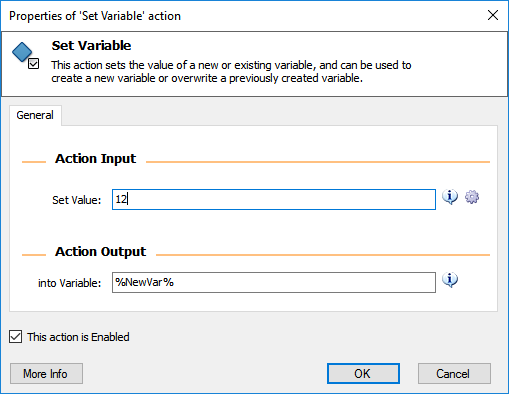
新たな変数を定義します。
Set Value: 値
into Variable: 変数名（日本語不可）他の変数同士の値を連結や計算したい場合は以下のような設定が可能です。
%a%%b% %a b% %a+b% %a/b%
「100%ジュース」のように、設定したい文字に「%:パーセント(半角)」が含まれる場合、式として解釈されてしまい、エラーとなってしまいます。 この場合「100￥%ジュース」のように、「%」の前に「￥」を記載することで、エラーを回避することができます。（￥は半角） また「￥」を表現したい場合は「￥￥」のように記述します。 フォルダ名とファイル名を結合したいときは「%Folder%￥%FileName%」ではなく「%Folder%￥￥%FileName%」と設定することを覚えておきましょう。
Increase Variable
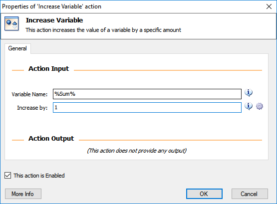
指定した変数に指定した値を加算します。
Variable Name : 変数名
Increase by: 加算値減算を行う場合は、Decrease Variableアクションを使用します。
Set Variableアクションで%num + 1%とした場合も加算が行われます。 Increase Variableアクションのほうが具体的な動作がわかるため、初期値設定や計算を行う場合はSet Variableアクションを、ループ処理に組み込むような場合は、こちらを使用したほうが好ましいでしょう。
List
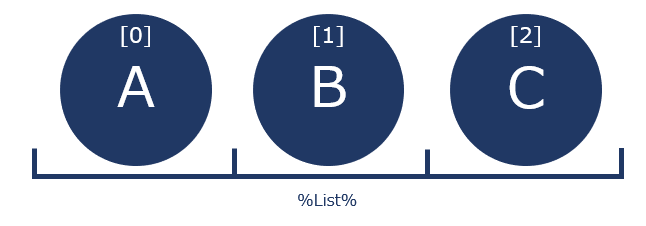
Listは複数の値を1つの変数で管理することができます。（EXCELの1行のようなイメージ）
ListはIndexと呼ばれる0から始まる連番の番地で管理され、以下のような形で値を取得することができます。
%List[0]%Listアクションは2つのアクションで使用できます。
- Create New List
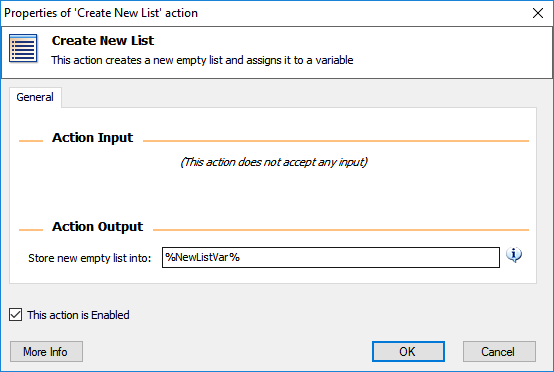
- List変数を作成します。
- Add Item to List
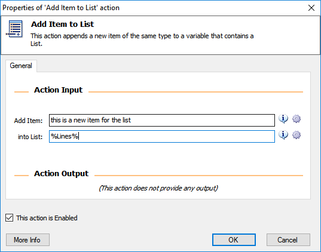 - 作成したListに値を追加します。
- Create New List
条件分岐
- 日常生活において、青信号は進め、赤信号は止まれ、黄色信号は警告など、様々な条件によって、取るべき行動が分岐していきます。
このように、決まった条件下で決まった処理を行うことをルールエンジンと呼びます。 - WinAutomationにおいては、これら条件によって分岐する処理を、条件分岐アクションを使い分けることで、解決していきます。
If/ElseIf/Else
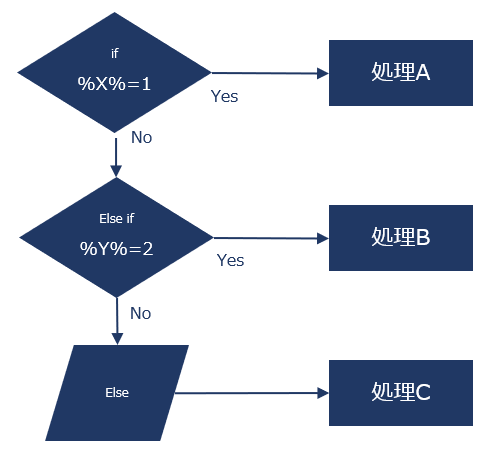
- If(メイン条件)、ElseIf（サブ条件n）、Else（その他）の条件を設定することができます。
- Ifアクションは、If File Existsアクション（対象のファイルが存在しているか）や、If Windowsアクション（対象のウィンドウが存在しているか）など、様々なケースを想定したアクションが存在しています。
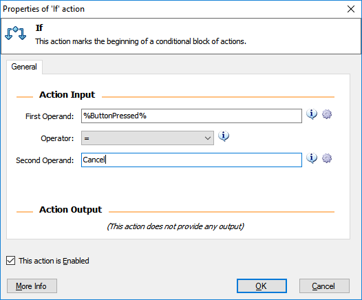
ifアクションは条件分岐のもっとも基本的なアクションです。
First Operand : 条件1
Operator : 比較式(=、>、<、Contains（含む）、Exists（存在する）・・・)
Second Operand : 条件2if/ElseIfアクションはそれぞれまったく異なる条件を設定することができます。
Else IfアクションはIfアクションとセットで使用されるアクションで、Ifに該当せず、別条件を設定したい場合に使用します。
Elseアクションは、If/Else Ifアクションとセットで使用され、すべての条件に合致しない場合に、実行されるアクションです。
Ifアクションの中にIfアクションを設定することもできます。
このような使い方をifアクションのネストと表現します。
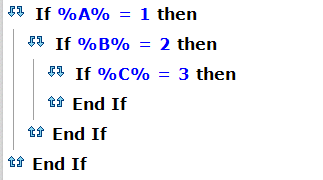ifアクションは基本的に1つの条件設定ですが、1つのアクション内に複数条件を指定したい場合は、以下のような設定が可能です。
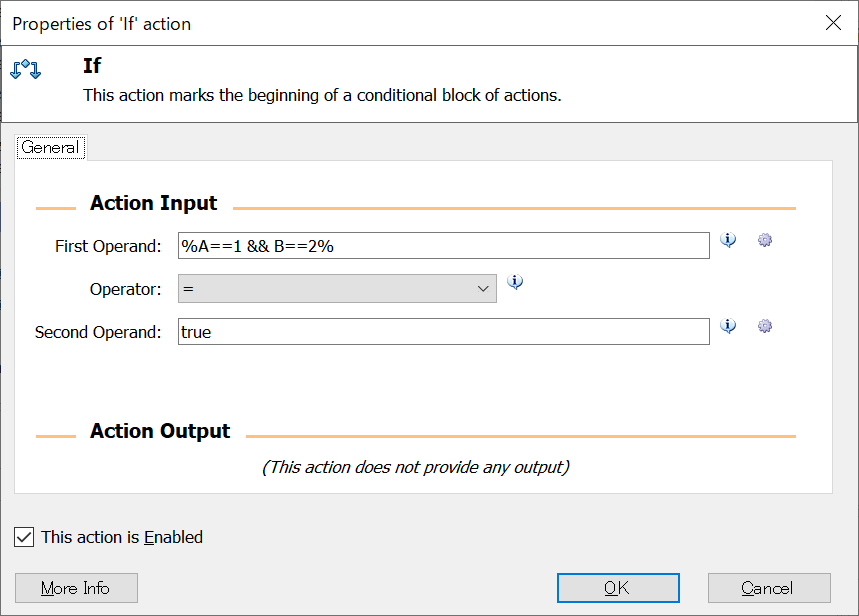
Switch/Case
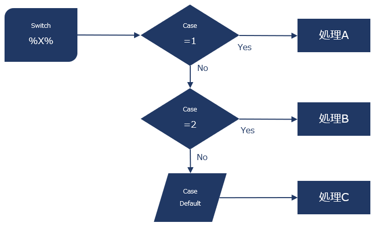
- Switch/Caseもifと同様の条件分岐アクションですが、ifのFirst Operandにあたる条件が固定となるのが特徴です。
- Switchアクションは、Caseアクションと組み合わせて使用し、その他条件はCase Defaultアクションを使用します。
- 条件の対象は同じで、条件値だけが変わる場合、Switchを使うことにより、if/ElseIf/Elseと比べ、格段に可読性が向上します。
ループ
- EXCELに10行データが設定されているような場合、WinAutomatuonではループ処理を使用して、各行のデータにアクセスします。
Loop
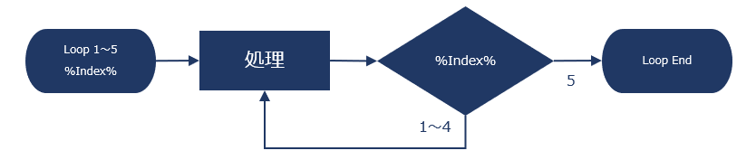
- 指定した回数を繰り返し処理するアクションです。
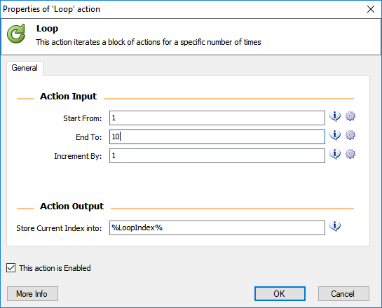
- Loopアクションは「開始値」「終了値」「増減値」「現在値」の4つで構成されます。
Start From : 開始値
End To : 現在値
Increment by : 増減値
Store Current Index into : 現在値（変数）
- 現在値は一般的にIndexと表現されます。
Listの要素にアクセスする場合は以下のように記述します。
%List[Index]% %List[Index - 1]%
For Each
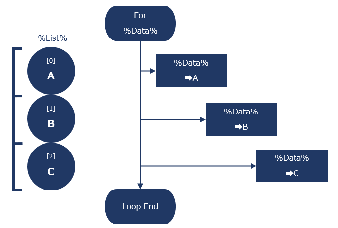
- For Eachアクションは、リスト、DataTableなど複数の要素で構成される要素数分だけループするアクションです。
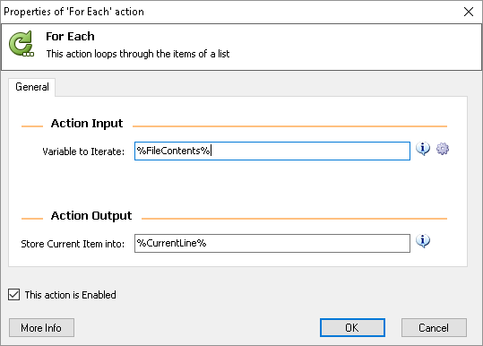
- 要素数分だけ繰り返します。
Variable to Iterate : 要素の集合体（Listなど）
Store Current Item into : 現在値が格納される変数
フォルダ操作
- フォルダの作成や、フォルダ内のファイルの取得、デスクトップの取得などが可能です。
Create Folder
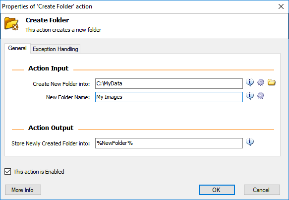
- 指定したパスにフォルダを作成します。
Create New Folder into : フォルダを作成するパス
New Folder Name : 新たに作成するフォルダ名
Store Newly Created Folder into : 作成したフォルダのパス情報が格納される変数
- 既にフォルダが存在する場合は、無視されます。
Copy Folder
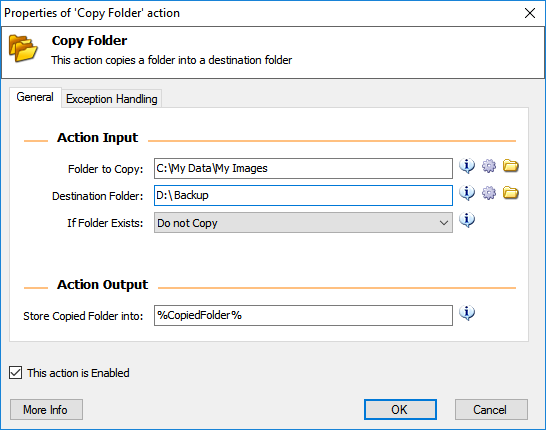
- 指定したパスにフォルダをコピーします。
Folder to Copy : コピーしたいフォルダパス
Destination Folder : コピー先のパス
If Folder Exists : 既にフォルダが存在する場合の設定
Overwtire : 上書き
Do not Copy : コピーしない
Store Copied Folder into : コピーしたフォルダのパス情報が格納される変数
Get Subfolders in Folder
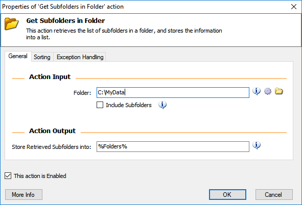
- 指定したフォルダに含まれるサブフォルダーを取得します。
Folder : 対象のフォルダパス
Include Subfolders : 孫フォルダ、ひ孫フォルダなども取得したい場合はチェック
- Sortingタブからソート順を指定できます。
Get Special Folder
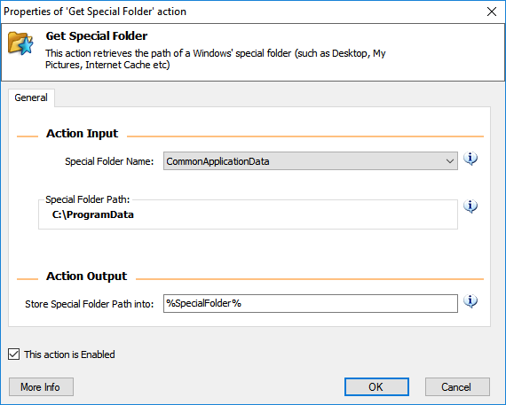
デスクトップ、プログラムファイルなど特定のフォルダーのパスを取得できます。
Special Folder Name パス DesktopDirectory デスクトップ Personal ドキュメント MyMusic マイミュージック MyPictures マイピクチャ System C:\Windows\system32 ProgramFiles C:\Program Files
ファイル操作
- ファイルのコピー、削除、検索などが可能です。
Copy File
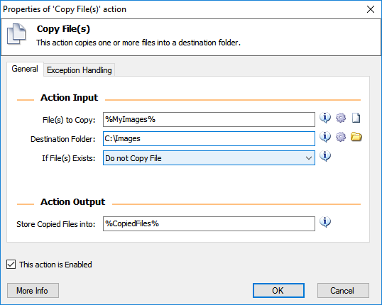
- 指定したパスにファイルをコピーします。
File(s) to Copy : 対象のファイルパス
Destination Folder : 移動先のフォルダパス
If Files(s) Exists : ファイルが存在した場合の処理
Delete File(s)
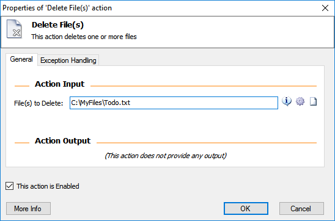
- 指定したパスのファイルを削除します。
File(s) to Delete : 対象のファイルパス
- Get Files in Folderアクションと組み合わせることで、複数ファイルの削除が可能です。
Get Files in Folder
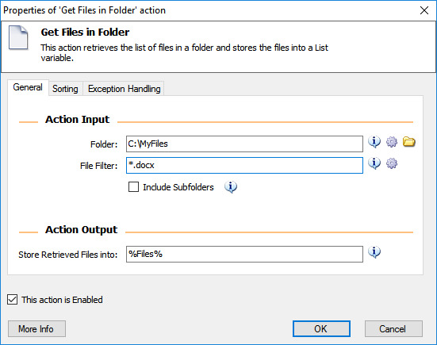
- 指定したパスからファイルを取得します。
Folder : 検索対象のフォルダパス
File Filter : ファイル名フィルタ
Store Retrieved Files into : 検索結果
ファイル名フィルタは「*」によるあいまい検索が可能です。
*.xlsx
待機
指定した時間待機したり、特定の画面が起動するまで待機します。
Wait
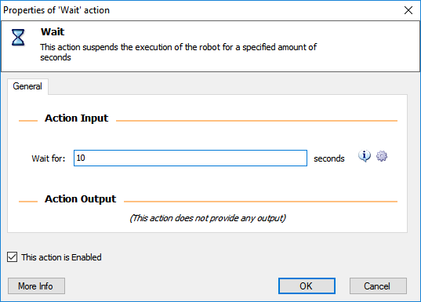
指定した時間待機します。
Wait for : 待機時間(秒)
ロボットがアプリケーションを操作する際、ロボットの動きが速すぎて、画面の切り替えがついてこない場合があります。 そのような場合にWaitアクションは非常に有効です。 しかし、パソコンによって処理速度はまちまちなので、出来るだけWait for WindowアクションやWait for Imageアクションを使用するのが良いでしょう。